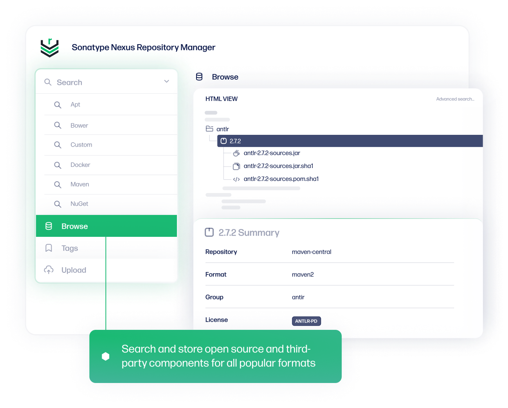
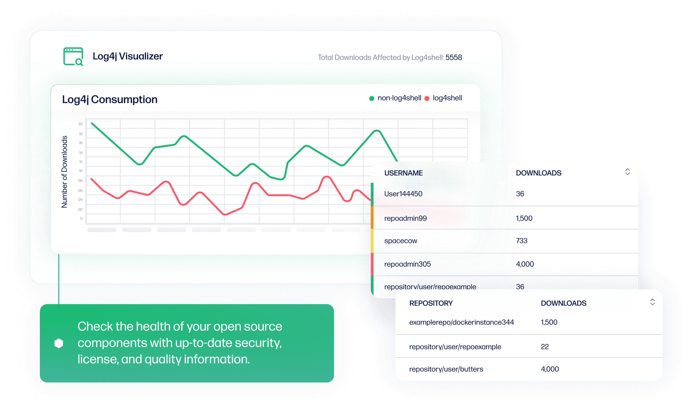

Nexus
 项目首页
项目首页
是Sonatype公司开发的一款强大仓库管理器，它简化了仓库维护，强化了私有仓库管理


 如何部署在线 Nexus
如何部署在线 Nexus
什么是 Nexus
- Nexus Repository Manager（简称Nexus）是Sonatype公司开发的一款强大仓库管理器，它简化了仓库维护，强化了私有仓库管理。通过Nexus，用户可集中管理、控制并访问软件组件和依赖项，确保私有仓库的安全稳定。Nexus提供权限控制和访问限制，防止未经授权的访问，增强数据保护。它还支持缓存和代理设置，提升内部网络下载速度，与构建工具和IDE无缝集成，方便开发人员获取依赖项。
功能列表
- 节省外网带宽大量对中央仓库的重复请求会消耗带宽，利用私服代理外部仓库，可以避免重复的公网下载降低带宽的压力。
- 加速maven的构建maven通过内网从私服拉取所需构件（私服存在此构件的情况下），获取构件的速度大大加快，从而加快打包构件的速度。
- 部署第三方构件开发人员自己封装的一些jar包（工具类），可以部署到私服，以便内部开发人员的maven项目使用
- 插提高稳定性当公网网络不稳定的时候，如果使用远程仓库，maven的构建也会变得不稳定。如果在私服存在所需的构件，即使没有公网，maven的构件也会顺利进行。
- 降低中央仓库的负荷使用私服，避免了从中央仓库的重复下载，可以减轻中央仓库的负荷。